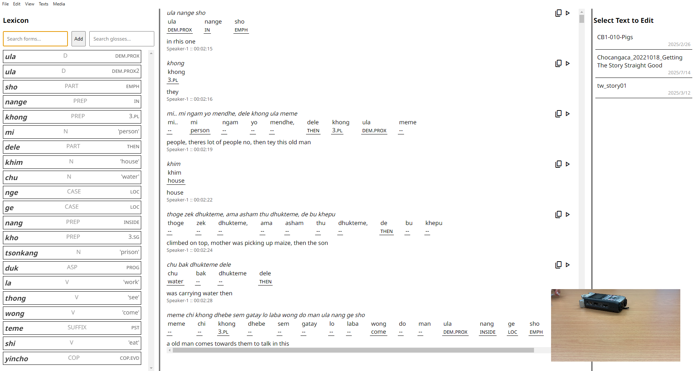
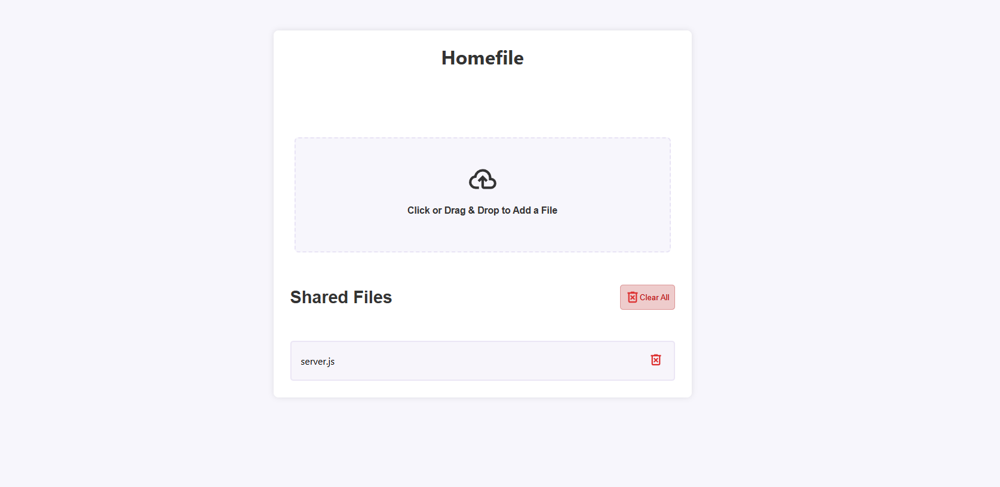
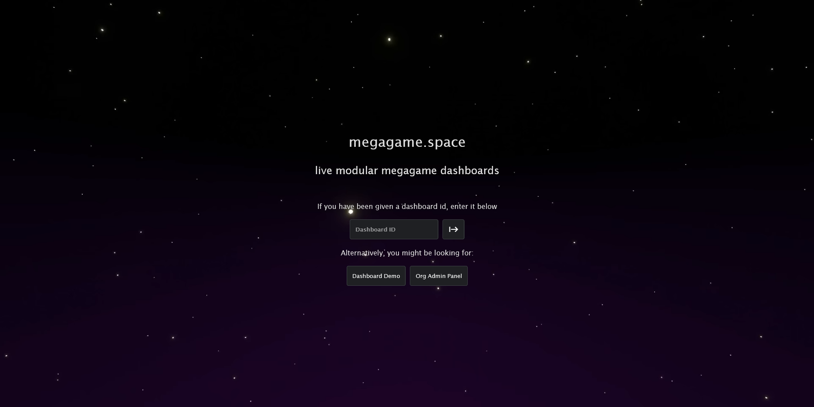
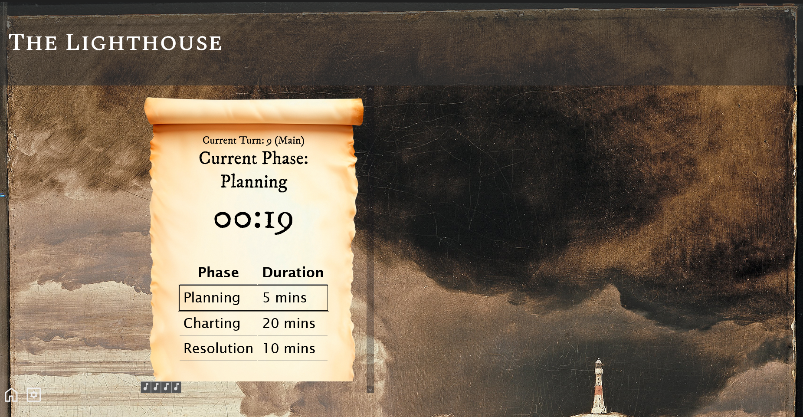
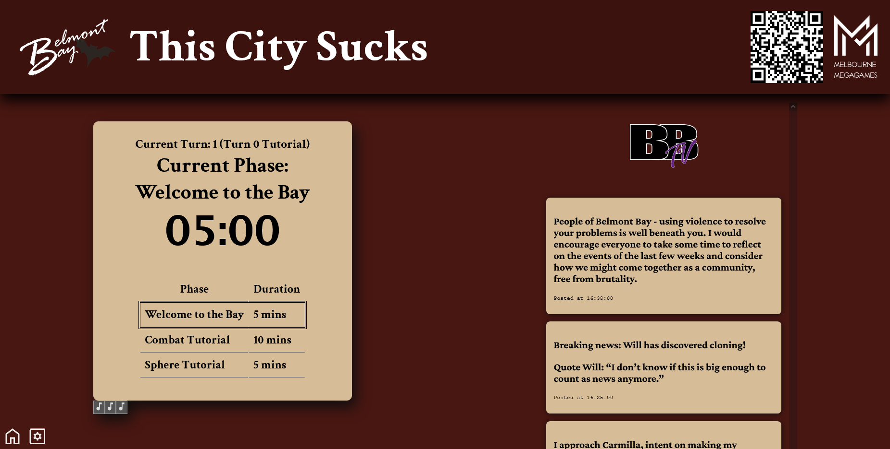
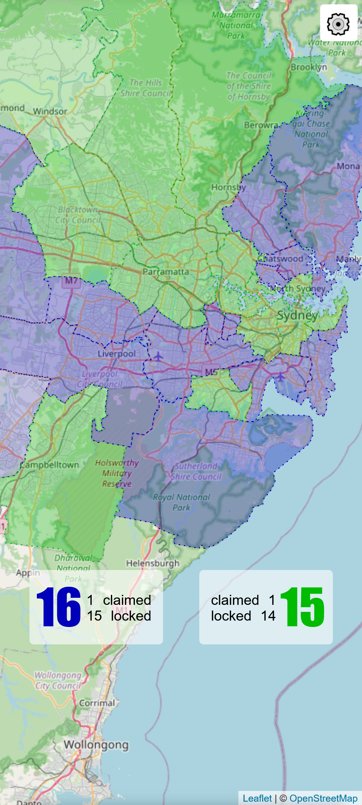
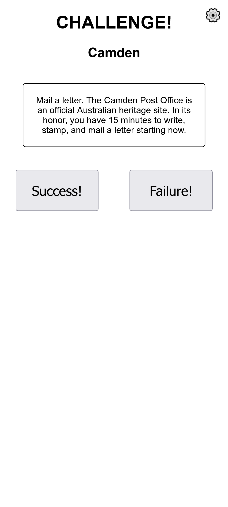

In addition to my research on Himalayan languages, I also have experience in coding and software development. In particular, I have experience in web development, working with JavaScript both client-side and server-side (Node.js), as well as with SQL and AWS architectures. My portfolio includes both personal and academic work, described below.
Academically, I have used my web development background to create tools for my research, such as the database summarising epistemic marking in Trans-Himalayan languages that developed out of my doctoral research, available here. I have also been working on a fieldwork data glossing and analysis tool as a cross-platform alternative to FLEx, which will be available in early alpha before the end of 2025.
My personal projects include tools to support large-scale in-person game events known as megagames, including the interactive dashboard used by Sydney Megagamers and Melbourne Megagames for their events, such as First Contact 2024.
Academic Projects
Fieldwork Data Tool
This project is a cross-platform tool for fieldwork data glossing and analysis, designed to be a lightweight alternative to FLEx. It is being built on the Electron framework, allowing it to run natively on all major operating systems.  Screenshot of the tool, showing the lexicon, glossing, and integrated audiovisual support. The text here, in Chocangaca, was imported directly from ELAN, and can be exported to LaTeX, and Word formats.Personal Projects
HomeFile LAN File Transfer
This is a simple web-based file transfer tool for local area networks, allowing for easy transfer of files between devices on the same network without the data leaving said network using a Node.js as a peer server and the PeerJS library for the WebRTC protocol.  Screenshot of the HomeFile LAN File Transfer tool, showing the file selection and transfer interface.Megagame Dashboard
This is a web-based dashboard for megagames, allowing for various game-relevant information such as clocks, newsfeeds, and stats to be displayed to players and synchronised across multiple devices. It is built with a Node.js backend with a PostgreSQL database, and a Vanilla JavaScript frontend. It is used regularly by organisations running megagames in both Sydney and Melbourne.  Screenshot of the Megagame Dashboard landing page.  Screenshot of the Megagame Dashboard in use for The Lighthouse by David Little (Sydney, 2025), showing the game clock and custom styling.  Screenshot of the Megagame Dashboard in use for This City Sucks by Chris Melenhorst (Melbourne, 2024), showing the game clock, newsfeed, and custom styling.Sydney Showdown
This web-app was developed to manage a Sydney-based adaptation of the Jet Lag the Game: Schengen Showdown web series. It uses a serverless Lambda-based architecture on AWS with a DynamoDB database to store game data, and a simple JavaScript frontend to allow players to interact with the game, "claiming" regions and viewing and completing challenges while travelling around Sydney's public transport network. 
Screenshots of the Sydney Showdown web app, showing the game map and current score, and the challenge screen